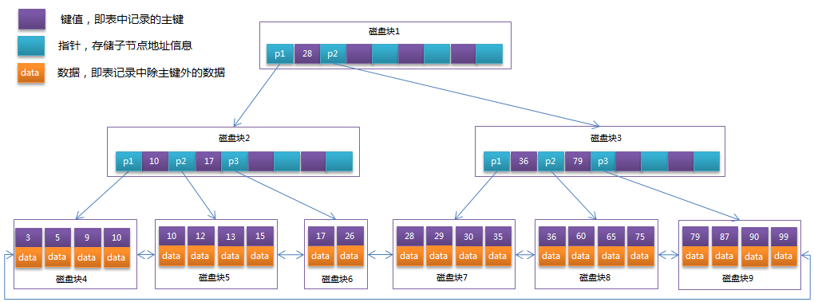
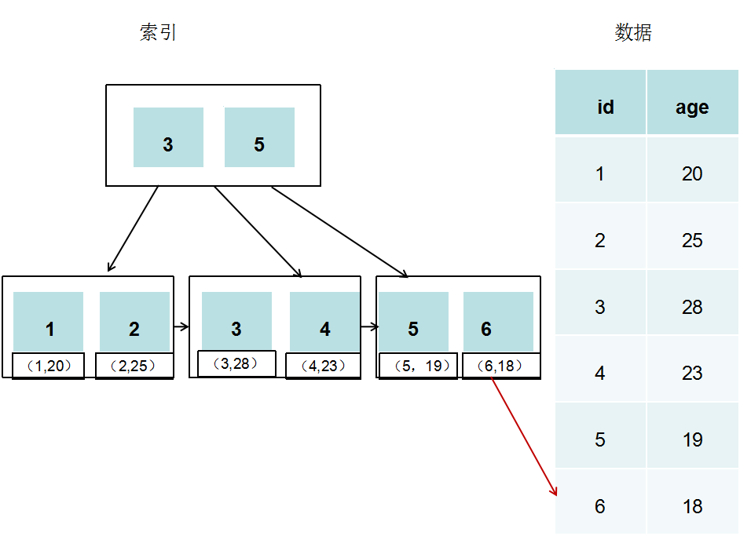

- AQS 万字图文全面解析.md
- Docker 镜像构建原理及源码分析.md
- ElasticSearch 小白从入门到精通.md
- JVM CPU Profiler技术原理及源码深度解析.md
- JVM 垃圾收集器.md
- JVM 面试的 30 个知识点.md
- Java IO 体系、线程模型大总结.md
- Java NIO浅析.md
- Java 面试题集锦（网络篇）.md
- Java-直接内存 DirectMemory 详解.md
- Java中9种常见的CMS GC问题分析与解决（上）.md
- Java中9种常见的CMS GC问题分析与解决（下）.md
- Java中的SPI.md
- Java中的ThreadLocal.md
- Java线程池实现原理及其在美团业务中的实践.md
- Java魔法类：Unsafe应用解析.md
- Kafka 源码阅读笔记.md
- Kafka、ActiveMQ、RabbitMQ、RocketMQ 区别以及高可用原理.md
- MySQL · 引擎特性 · InnoDB Buffer Pool.md
- MySQL · 引擎特性 · InnoDB IO子系统.md
- MySQL · 引擎特性 · InnoDB 事务系统.md
- MySQL · 引擎特性 · InnoDB 同步机制.md
- MySQL · 引擎特性 · InnoDB 数据页解析.md
- MySQL · 引擎特性 · InnoDB崩溃恢复.md
- MySQL · 引擎特性 · 临时表那些事儿.md
- MySQL 主从复制 半同步复制.md
- MySQL 主从复制 基于GTID复制.md
- MySQL 主从复制.md
- MySQL 事务日志(redo log和undo log).md
- MySQL 亿级别数据迁移实战代码分享.md
- MySQL 从一条数据说起-InnoDB行存储数据结构.md
- MySQL 地基基础：事务和锁的面纱.md
- MySQL 地基基础：数据字典.md
- MySQL 地基基础：数据库字符集.md
- MySQL 性能优化：碎片整理.md
- MySQL 故障诊断：一个 ALTER TALBE 执行了很久，你慌不慌？.md
- MySQL 故障诊断：如何在日志中轻松定位大事务.md
- MySQL 故障诊断：教你快速定位加锁的 SQL.md
- MySQL 日志详解.md
- MySQL 的半同步是什么？.md
- MySQL中的事务和MVCC.md
- MySQL事务_事务隔离级别详解.md
- MySQL优化：优化 select count().md
- MySQL共享锁、排他锁、悲观锁、乐观锁.md
- MySQL的MVCC（多版本并发控制）.md
- QingStor 对象存储架构设计及最佳实践.md
- RocketMQ 面试题集锦.md
- SnowFlake 雪花算法生成分布式 ID.md
- Spring Boot 2.x 结合 k8s 实现分布式微服务架构.md
- Spring Boot 教程：如何开发一个 starter.md
- Spring MVC 原理.md
- Spring MyBatis和Spring整合的奥秘.md
- Spring 帮助你更好的理解Spring循环依赖.md
- Spring 循环依赖及解决方式.md
- Spring中眼花缭乱的BeanDefinition.md
- Vert.x 基础入门.md
- eBay 的 Elasticsearch 性能调优实践.md
- 不可不说的Java“锁”事.md
- 互联网并发限流实战.md
- 从ReentrantLock的实现看AQS的原理及应用.md
- 从SpringCloud开始，聊微服务架构.md
- 全面了解 JDK 线程池实现原理.md
- 分布式一致性理论与算法.md
- 分布式一致性算法 Raft.md
- 分布式唯一 ID 解析.md
- 分布式链路追踪：集群管理设计.md
- 动态代理种类及原理，你知道多少？.md
- 响应式架构与 RxJava 在有赞零售的实践.md
- 大数据算法——布隆过滤器.md
- 如何优雅地记录操作日志？.md
- 如何设计一个亿级消息量的 IM 系统.md
- 异步网络模型.md
- 当我们在讨论CQRS时，我们在讨论些神马？.md
- 彻底理解 MySQL 的索引机制.md
- 最全的 116 道 Redis 面试题解答.md
- 有赞权限系统(SAM).md
- 有赞零售中台建设方法的探索与实践.md
- 服务注册与发现原理剖析（Eureka、Zookeeper、Nacos）.md
- 深入浅出Cache.md
- 深入理解 MySQL 底层实现.md
- 漫画讲解 git rebase VS git merge.md
- 生成浏览器唯一稳定 ID 的探索.md
- 缓存 如何保证缓存与数据库的双写一致性？.md
- 网易严选怎么做全链路监控的？.md
- 美团万亿级 KV 存储架构与实践.md
- 美团点评Kubernetes集群管理实践.md
- 美团百亿规模API网关服务Shepherd的设计与实现.md
- 解读《阿里巴巴 Java 开发手册》背后的思考.md
- 认识 MySQL 和 Redis 的数据一致性问题.md
- 进阶：Dockerfile 高阶使用指南及镜像优化.md
- 铁总在用的高性能分布式缓存计算框架 Geode.md
- 阿里云PolarDB及其共享存储PolarFS技术实现分析（上）.md
- 阿里云PolarDB及其共享存储PolarFS技术实现分析（下）.md
- 面试最常被问的 Java 后端题.md
- 领域驱动设计在互联网业务开发中的实践.md
- 领域驱动设计的菱形对称架构.md
- 高效构建 Docker 镜像的最佳实践.md
深入理解 MySQL 底层实现
-
MySQL的常用引擎
1. InnoDB
InnoDB的存储文件有两个，后缀名分别是.frm和.idb，其中.frm是表的定义文件，而idb是数据文件。
InnoDB中存在表锁和行锁，不过行锁是在命中索引的情况下才会起作用。
InnoDB支持事务，且支持四种隔离级别（读未提交、读已提交、可重复读、串行化），默认的为可重复读；而在Oracle数据库中，只支持串行化级别和读已提交这两种级别，其中默认的为读已提交级别。
2. Myisam
Myisam的存储文件有三个，后缀名分别是.frm、.MYD、MYI，其中.frm是表的定义文件，.MYD是数据文件，.MYI是索引文件。
Myisam只支持表锁，且不支持事务。Myisam由于有单独的索引文件，在读取数据方面的性能很高 。
3. 存储结构
InnoDB和Myisam都是用B+Tree来存储数据的。
MySQL的数据、索引存储结构
1. 数据存储的原理（硬盘）
信息存储在硬盘里，硬盘是由很多的盘片组成，通过盘片表面的磁性物质来存储数据。把盘片放在显微镜下放大，可以看到盘片表面是凹凸不平的，凸起的地方被磁化，代表数字1，凹的地方没有被磁化，代表数字0，因此硬盘可以通过二进制的形式来存储表示文字、图片等的信息。
硬盘有很多种，但是都是由盘片、磁头、盘片主轴、控制电机、磁头控制器、数据转换器、接口、缓存等几个部分组成。
所有的盘片都固定在一个旋转轴上，这个轴即盘片主轴。
所有的盘片之间是绝对平行的，在每个盘片的盘面上都有一个磁头，磁头与盘片之间的距离比头发丝的直径还小。
所有的磁头连在一个磁头控制器上，由磁头控制器负责各个磁头的运动，磁头可沿盘片的半径方向移动，实际上是斜切运动，每个磁头同一时刻必须是同轴的，即从正上方往下看，所有磁头任何时候都是重叠的，由于技术的发展，目前已经有多磁头独立技术了，在此不考虑此种情况。
盘片以每分钟数千转到上万转的速度在高速运转，这样磁头就能对盘片上的指定位置进行数据的读写操作。
由于硬盘是高精密设备，尘埃是其大敌，所以必须完全密封。
2. 数据读写的原理
硬盘在逻辑上被划分为磁道、柱面以及扇区。
磁头靠近主轴接触的表面，即线速度最小的地方，是一个特殊的区域，它不存放任何数据，称为启停区或者着陆区，启停区外就是数据区。
在最外圈，离主轴最远的地方是“0”磁道，硬盘数据的存放就是从最外圈开始的。
在硬盘中还有一个叫“0”磁道检测器的构件，它是用来完成硬盘的初始定位。
盘面
硬盘的盘片一般用铝合金材料做基片，硬盘的每一个盘片都有上下两个盘面，一般每个盘面都会得到利用，都可以存储数据，成为有效盘面，也有极个别的硬盘盘面数为单数。
每一个这样的有效盘面都有一个盘面号，按顺序从上至下从0开始编号。
在硬盘系统中，盘面号又叫磁头号，因为每一个有效盘面都有一个对应的读写磁头，硬盘的盘片组在2-14片不等，通常有2-3个盘片。
磁道
磁盘在格式化时被划分成许多同心圆，这些同心圆轨迹叫做磁道。
磁道从外向内从0开始顺序编号，硬盘的每一个盘面有300-1024个磁道，新式大容量硬盘每面的磁道数更多，信息以脉冲串的形式记录在这些轨迹中，这些同心圆不是连续记录数据，而是被划分成一段段的圆弧，这些圆弧的角速度一样，由于径向长度不一样，所以线速度也不一样，外圈的线速度较内圈的线速度大，即同样的转速度下，外圈在同样时间段里，划过的圆弧长度要比内圈划过的圆弧长度大。
每段圆弧叫做一个扇区，扇区从1开始编号，每个扇区中的数据作为一个单元同时读出或写入。
磁道是看不见的，只是盘面上以特殊形式磁化了的一些磁化区，在磁盘格式化时就已规划完毕。
柱面
所有盘面上的同一磁道构成一个圆柱，通常称作柱面。
每个圆柱上的磁头由上而下从0开始编号，数据的读/写按柱面进行，即磁头读/写数据时首先在同一柱面内从0磁头开始进行操作，依次向下在同一柱面的不同盘面即磁头上进行操作，只有在同一柱面所有的磁头全部读/写完毕后磁头才转移到下一柱面（同心圆再往里的柱面），因为选取磁头只需要通过电子切换即可，而选取柱面则必须机械切换，电子切换相当快，比在机械上的磁头向邻近磁道移动快得多。
所以，数据的读/写按柱面进行，而不按盘面进行，也就是说，一个磁道写满数据后，就在同一柱面的下一个盘面来写，一个柱面写满后，才移到下一个扇区开始写数据，读数据也按照这种方式进行，这样就提高了硬盘的读/写效率。
扇区
操作系统以扇区形式将信息存储在硬盘上，每个扇区包括512个字节的数据和一些其他信息，一个扇区有两个主要部分：存储数据地点的标识符和存储数据的数据段。
标识符就是扇区头标，包括组成扇区三维地址的三个数字：盘面号，柱面号，扇区号（块号）。
数据段可分为数据和保护数据的纠错码（ECC）。在初始准备期间，计算机用512个虚拟信息字节（实际数据的存放地）和与这些虚拟信息字节相应的ECC数字填入这个部分。
3. 访盘请求完成过程
1）确定磁盘地址（柱面号，磁头号，扇区号），内存地址（源/目）：
当需要从磁盘读取数据的时候，系统会将数据的逻辑地址传递个磁盘，磁盘的控制电路按照寻址逻辑将逻辑地址翻译成物理地址，即确定要读的数据在哪个磁道，哪个扇区。
2）为了读取这个扇区的数据，需要将磁头放到这个扇区上方，为了实现这一点：
- A. 首先必须找到柱面，即磁头需要移动对准相应磁道，这个过程叫做寻道，所耗费时间叫做寻道时间。
- B. 然后目标扇区旋转到磁头下，即磁盘旋转将目标扇区旋转到磁头下，这个过程耗费的时间叫做旋转时间。
3）即一次访盘请求（读/写）完成过程由三个动作组成：
- A. 寻道（时间）：磁头移动定位到指定磁道。
- B. 旋转延迟（时间）：等待指定扇区从磁头下旋转经过。
- C. 数据传输（时间）：数据在磁盘与内存之间的实际传输。
4. 磁盘的读写原理
系统将文件存储到磁盘上时，按柱面、磁头、扇区的方式进行，即最先是第1磁道的第一磁头下的所有扇区，然后是同一柱面的下一个磁头，……，一个柱面存储满后就推进到下一个柱面，直到把文件内容全部写入磁盘。
系统也以相同的顺序读出数据，读出数据时通过告诉磁盘控制器要读出扇区所在柱面号、磁头号和扇区号（物理地址的三个组成部分）进行。
5. 减少I/O的预读原理
由于存储介质的特性，磁盘本身存取就比主存慢很多，再加上机械运动耗费的时间，磁盘的存取速度往往是主存的几百分之一，因此为了提高效率，要尽量减少磁盘的I/O，磁盘往往不是严格地按需读取，而是每次都会预读，即使只需要一个字节，磁盘也会从这个位置开始，顺序向后读取一定长度的数据放入内存，这样做的理论依据是计算机科学中著名的局部性原理：
- 当一个数据被用到时，其附近的数据一般来说也会被马上使用。
- 程序运行期间所需要的数据通常比较集中。
- 由于磁盘顺序读取的效率很高（不需要寻道时间，只需要很少的旋转时间），因此对于具有局部性的程序来说，预读可以提高I/O效率。
预读的长度一般为页（Page）的整数倍。页是计算机管理存储器的逻辑块，硬件及操作系统往往将主存和磁盘存储分割为连续的大小相等的块，每个存储块称为一页（在许多操作系统中，页的大小通常为4k），主存和磁盘以页为单位交换数据，当程序要读取的数据不在主存中时，会触发一个缺页异常，此时系统会向磁盘发出读盘信息，磁盘会找到数据的起始位置并向后连续读取一页或几页的数据载入内存中，然后异常返回，程序继续运行。
6. MySQL的索引
索引是一种用来实现MySQL高效获取数据的数据结构。
我们通常所说的在某个字段上建索引，意思就是让MySQL对该字段以索引这种数据结构来存储，然后查找的时候就有对应的查找算法。
建索引的根本目的是为了查找的优化，特别是当数据很庞大的时候，一般的查找算法有顺序查找、折半查找、快速查找等，但是每种查找算法都只能应用于特定的数据结构之上，例如顺序查找依赖于顺序结构，折半查找通过二叉查找树或红黑树实现二分搜索。因此在数据之外，数据库系统还维护着满足特定查找算法的数据结构。
这些数据结构以某种方式引用数据，这样就可以在这些数据结构上实现高级查找算法，这种数据结构就是索引。
7. MySQL的B+Tree
目前大多数数据库系统及文件系统都采用B-Tree或其变种B+Tree作为索引结构。
B+树索引是B+树在数据库中的一种实现，是最常见也是数据库中使用最为频繁的一种索引。B+树中的B代表平衡，而不是二叉，因为B+树是从最早的平衡二叉树演化而来的。B+树是由二叉查找树、平衡二叉树（AVLTree）和平衡多路查找树（B-Tree）逐步优化而来。
二叉查找树：左子树的键值小于根的键值，右子树的键值大于根的键值。
AVL树：平衡二叉树（AVL树）在符合二叉查找树的条件下，还满足任何节点的两个子树的高度最大差为1。
平衡多路查找树（B-Tree）：为磁盘等外存储设备设计的一种平衡查找树。
系统从磁盘读取数据到内存时是以磁盘块（block）为基本单位的，位于同一磁盘块中的数据会被一次性读取出来，而不是按需读取。
InnoDB存储引擎使用页作为数据读取单位，页是其磁盘管理的最小单位，默认page大小是16k。
系统的一个磁盘块的存储空间往往没有这么大，因此InnoDB每次申请磁盘空间时都会是若干地址连续磁盘块来达到页的大小16KB。InnDB在把磁盘数据读入到磁盘时会以页为基本单位，在查询数据时如果一个页中的每条数据都能助于定位数据记录的位置，这将会减少磁盘I/O的次数，提高查询效率。
B-Tree结构的数据可以让系统高效的找到数据所在的磁盘块。
为了描述B-Tree，首先定义一条数据记录为一个二元组[key, data]，key为记录的键值，对于不同数据记录，key是互不相同的；data为数据记录除key外的数据。那么B-Tree是满足下列条件的数据结构：
- d为大于1的一个正整数，称为B-Tree的度。
- h为一个正整数，称为B-Tree的高度。
- 每个非叶子节点由n-1个key和n个指针组成，其中d<=n<=2d。
- 每个叶子节点最少包含一个key和两个指针，最多包含2d-1个key和2d个指针，叶节点的指针均为null 。
- 所有叶节点具有相同的深度，等于树高h。
- key和指针互相间隔，节点两端是指针。
- 一个节点中的key从左到右非递减排列。
- 所有节点组成树结构。
- 每个指针要么为null，要么指向另外一个节点。
- 如果某个指针在节点node最左边且不为null，则其指向节点的所有key小于v(key1)，其中v(key1)为node的第一个key的值。
- 如果某个指针在节点node最右边且不为null，则其指向节点的所有key大于v(keym)，其中v(keym)为node的最后一个key的值。
- 如果某个指针在节点node的左右相邻key分别是keyi和keyi+1且不为null，则其指向节点的所有key小于v(keyi+1)且大于v(keyi)。
B-Tree中的每个节点根据实际情况可以包含大量的关键字信息和分支，例：

每个节点占用一个盘块的磁盘空间，一个节点上有两个升序排序的关键字和三个指向子树根节点的指针，指针存储的是子节点所在磁盘块的地址。两个关键词划分成的三个范围域对应三个指针指向的子树的数据的范围域。以根节点为例，关键字为17和35，P1指针指向的子树的数据范围为小于17，P2指针指向的子树的数据范围为17~35，P3指针指向的子树的数据范围为大于35。
模拟查找关键字29的过程：
- 根据根节点找到磁盘块1，读入内存。【磁盘I/O操作第1次】
- 比较关键字29在区间（17,35），找到磁盘块1的指针P2。
- 根据P2指针找到磁盘块3，读入内存。【磁盘I/O操作第2次】
- 比较关键字29在区间（26,30），找到磁盘块3的指针P2。
- 根据P2指针找到磁盘块8，读入内存。【磁盘I/O操作第3次】
- 在磁盘块8中的关键字列表中找到关键字29。
MySQL的InnoDB存储引擎在设计时是将根节点常驻内存的，因此力求达到树的深度不超过3，也就是说I/O不需要超过3次
分析上面过程，发现需要3次磁盘I/O操作，和3次内存查找操作。由于内存中的关键字是一个有序表结构，可以利用二分法查找提高效率。而3次磁盘I/O操作是影响整个B-Tree查找效率的决定因素。B-Tree相对于AVLTree缩减了节点个数，使每次磁盘I/O取到内存的数据都发挥了作用，从而提高了查询效率。
B+Tree是在B-Tree基础上的一种优化，使其更适合实现外存储索引结构，InnoDB存储引擎就是用B+Tree实现其索引结构。
在B-Tree中，每个节点中有key，也有data，而每一个页的存储空间是有限的，如果data数据较大时将会导致每个节点（即一个页）能存储的key的数量很小，当存储的数据量很大时同样会导致B-Tree的深度较大，增大查询时的磁盘I/O次数，进而影响查询效率。在B+Tree中，所有数据记录节点都是按照键值大小顺序存放在同一层的叶子节点上，而非叶子节点上只存储key值信息，这样可以大大加大每个节点存储的key值数量，降低B+Tree的高度。
B+Tree在B-Tree的基础上有两点变化：
- 数据是存在叶子节点中的
- 数据节点之间是有指针指向的
由于B+Tree的非叶子节点只存储键值信息，假设每个磁盘块能存储4个键值及指针信息，则变成B+Tree后其结构如下图所示：

通常在B+Tree上有两个头指针，一个指向根节点，另一个指向关键字最小的叶子节点，而且所有叶子节点（即数据节点）之间是一种链式环结构。因此可以对B+Tree进行两种查找运算：一种是对于主键的范围查找和分页查找，另一种是从根节点开始，进行随机查找。
8. Myisam中的B+Tree
Myisam引擎也是采用的B+Tree结构来作为索引结构。
由于Myisam中的索引和数据分别存放在不同的文件，所以在索引树中的叶子节点中存的数据是该索引对应的数据记录的地址，由于数据与索引不在一起，所以Myisam是非聚簇索引。

9. InnoDB中的B+Tree
InnoDB是以ID为索引的数据存储。
采用InnoDB引擎的数据存储文件有两个，一个定义文件，一个是数据文件。
InnoDB通过B+Tree结构对ID建索引，然后在叶子节点中存储记录。

若建索引的字段不是主键ID，则对该字段建索引，然后在叶子节点中存储的是该记录的主键，然后通过主键索引找到对应的记录。
MySQL的相关优化
1. MySQL性能优化：组成、表的设计
- 开启查询缓存。避免某些SQL函数直接在SQL语句中使用，从而导致Mysql缓存失效。
- 避免画蛇添足。目的是什么就取什么，例如某个逻辑是只需要判断是否存在女性，若是查到了一条即可，勿要全部都查一遍，此时要善用limit。
- 建合适的索引。所以要建在合适的地方，合适的对象上。经常操作/比较/判断的字段应该建索引。
- 字段大小合宜。字段的取值是有限而且是固定的，这种情况下可以用enum，IP字段可以用unsigned int来存储。
- 表的设计。垂直分割表，使得固定表与变长表分割，从而降低表的复杂度和字段的数目。
2. SQL语句优化：避免全表扫描
- 建索引：一般在where及order by中涉及到的列上建索引，尽量不要对可以重复的字段建索引。
- 尽量避免在where中使用!（<>）或or，也不要进行null值判断。
- 尽量避免在where中对字段进行函数操作、表达式操作。
- 尽量避免使用like- %，在此种情况下可以进行全文检索。